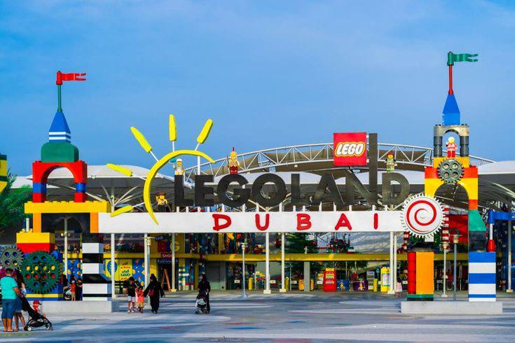
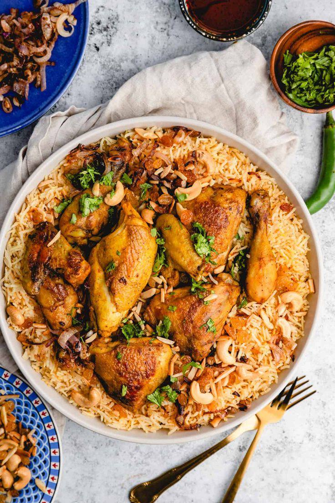

Dubaï, la perle des Émirats arabes unis, est une ville où tradition et modernité s’entrelacent dans un spectacle fascinant. Jadis un humble village de pêcheurs et de commerçants de perles, elle s’est métamorphosée en quelques décennies en une métropole futuriste, symbole de luxe et d’ambition.
Avec ses gratte-ciels vertigineux comme le Burj Khalifa, ses îles artificielles en forme de palmiers et ses centres commerciaux gigantesques, Dubaï incarne l’innovation et l’audace. Mais au-delà de son éclat moderne, la ville reste profondément ancrée dans sa culture et ses traditions, offrant un mélange unique d’héritage arabe et de vision du futur.
Burj Khalifa
Le Burj Khalifa, symbole emblématique de Dubaï et prouesse architecturale sans précédent, est la plus haute tour du monde, culminant à 828 mètres. Inauguré en 2010, ce gratte-ciel futuriste incarne l’ambition et l’innovation de la ville, repoussant les limites de l’ingénierie moderne.
Conçu pour être bien plus qu’une tour, le Burj Khalifa abrite des bureaux, des résidences luxueuses, des restaurants prestigieux et des plateformes d’observation offrant une vue à couper le souffle sur Dubaï et le désert environnant. Ce chef-d’œuvre, qui semble toucher le ciel, est devenu une icône mondiale et une source d’inspiration pour tous ceux qui rêvent de grandeur.
Rub Al-Khali
Le Rub al-Khali, également connu sous le nom de “Quart Vide”, est l’un des plus grands et des plus impressionnants déserts de sable au monde. S’étendant sur environ 650 000 km² à travers l’Arabie saoudite, Oman, les Émirats arabes unis et le Yémen, il constitue un paysage fascinant de dunes dorées ondulantes et de vastes étendues arides.
Ce désert mythique, à la fois redouté et admiré, est une terre de mystères où la vie semble presque impossible, mais où des formes de faune et de flore adaptées aux conditions extrêmes subsistent. Chargé d’histoires et de légendes, le Rub al-Khali témoigne de la puissance de la nature et reste un lieu d’émerveillement pour les aventuriers et les chercheurs en quête de solitude et de découverte.
Burj Al-Arab
Le Burj Al Arab, véritable icône de Dubaï, est bien plus qu’un hôtel : c’est un symbole mondial de luxe et d’innovation architecturale. Construit sur une île artificielle au large des côtes de la ville et inauguré en 1999, cet établissement exceptionnel en forme de voile de bateau est l’un des hôtels les plus prestigieux au monde.
Revendiquant sept étoiles, le Burj Al Arab offre une expérience incomparable avec ses suites somptueuses, ses restaurants suspendus au-dessus du golfe Persique, et son service personnalisé inégalé. Chef-d’œuvre d’ingénierie et de design, il incarne l’audace et le raffinement qui ont fait de Dubaï une destination incontournable pour les amateurs de grandeur et de sophistication.
Spectacle de Fontaine de Dubai
Le spectacle de la Fontaine de Dubaï est une expérience magique qui attire des millions de visiteurs chaque année. Située au pied du Burj Khalifa, sur le lac artificiel du Dubai Mall, cette fontaine géante est la plus grande du monde. Conçue pour captiver, elle projette de puissants jets d’eau jusqu’à 150 mètres de hauteur, dans une danse synchronisée avec des jeux de lumière et des musiques allant des classiques arabes aux hits internationaux.
Chaque représentation est un mélange envoûtant de technologie et d’art, transformant l’eau en une véritable œuvre vivante. Ce spectacle gratuit, qui illumine les nuits de Dubaï, reflète l’ambition de la ville de créer des expériences uniques et mémorables.
Legoland
Legoland, un parc d’attractions incontournable pour les familles, plonge petits et grands dans l’univers magique des célèbres briques de construction. Né en 1968 au Danemark, ce concept a rapidement conquis le monde, avec plusieurs parcs répartis à travers la planète, dont celui de Dubaï. Legoland est un lieu où l’imagination prend vie, offrant des attractions, des jeux interactifs et des spectacles, le tout autour des thèmes des célèbres jouets.
Avec ses reproductions miniatures de monuments célèbres, ses montagnes russes et ses ateliers créatifs, Legoland permet aux visiteurs de s’aventurer dans un monde de divertissement et de construction, où chaque brique contribue à une expérience inoubliable.

Spectacle de la Perle
Le spectacle des Perles de Dubaï est une expérience sensorielle fascinante qui met en lumière l’histoire et l’importance de la perle dans la culture et l’économie de la région. Ce spectacle, qui se déroule dans un cadre somptueux, raconte l’histoire des perles naturelles de la mer du Golfe, autrefois la principale richesse de Dubaï avant l’essor du pétrole.
À travers des jeux de lumière, de musique et des projections visuelles, le spectacle illustre l’extraction des perles, la vie des pêcheurs et l’impact culturel de cette tradition millénaire. Un voyage captivant dans le passé, où la magie des perles rencontre l’innovation artistique de Dubaï, créant ainsi un moment inoubliable pour les visiteurs.
Quelques les Spécialités Culinaires
Machboos
Le machboos est un plat traditionnel emblématique de la cuisine du Moyen-Orient, particulièrement prisé dans les pays du Golfe, comme l’Arabie Saoudite, les Émirats Arabes Unis et le Koweït. Véritable festin de saveurs, il se compose principalement de riz épicé, de viande (souvent de poulet, d'agneau ou de bœuf) et de légumes, le tout mijoté dans un mélange d'épices parfumées qui en fait un plat à la fois réconfortant et riche en arômes. Le machboos, parfois comparé au pilaf ou au biryani, se distingue par sa cuisson lente, qui permet aux épices et aux ingrédients de se marier harmonieusement pour créer un goût profondément savoureux. Plébiscité lors de grandes occasions ou de repas familiaux, le machboos est plus qu’un simple plat : c’est un symbole de convivialité et de générosité, reflet de l’hospitalité typique de cette région du monde.

Le Camel Burger
Le camel burger, ou burger de viande de chameau, est une spécialité culinaire qui suscite curiosité et intérêt à travers le monde. Originaire principalement des régions où l'élevage de chameaux est une tradition, ce met se distingue par son originalité et ses qualités nutritives. Considéré comme une alternative à la viande bovine ou ovine, le camel burger séduit par sa richesse en protéines, sa faible teneur en matières grasses et son goût légèrement différent, souvent décrit comme plus subtil et moins intense. Que ce soit pour découvrir de nouvelles saveurs ou pour profiter d'un plat exotique, le camel burger incarne une fusion unique entre traditions locales et modernité gastronomique.
Le Baklawa
Le baklawa, aussi connu sous le nom de baklava, est une pâtisserie emblématique des cuisines du Moyen-Orient, du Maghreb et des Balkans, réputée pour sa richesse en saveurs et sa texture fondante. Ce dessert raffiné, composé de fines couches de pâte filo croustillante, généreusement garnies de fruits secs tels que les amandes, les noix ou les pistaches, et enrobé de sirop ou de miel parfumé, est un véritable délice pour les amateurs de douceurs sucrées. Symbole d'hospitalité et de convivialité, le baklawa est souvent préparé lors de grandes occasions ou pour accompagner un moment de partage autour d'un thé. À la fois héritage culturel et plaisir gourmand, il incarne l'art de la pâtisserie traditionnelle à son apogée.